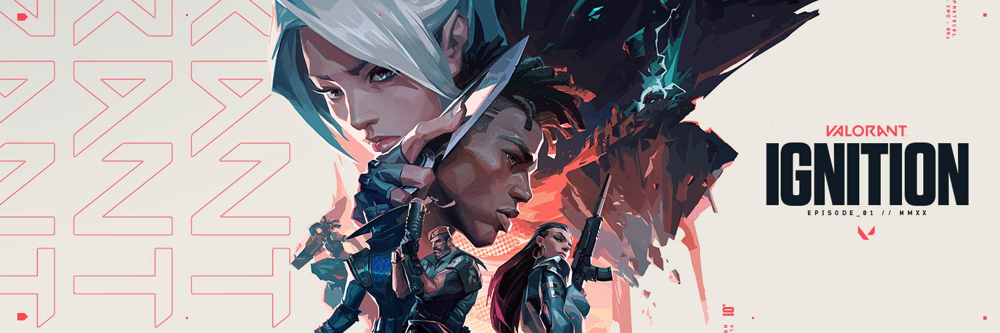

Valorant - Tudo que você precisa saber sobre o jogo
O que é Valorant
Valorant é um jogo eletrônico multijogador gratuito para jogar de tiro em primeira pessoa desenvolvido e publicado pela Riot Games. É o primeiro jogo do gênero desenvolvido pela empresa, sendo anunciado pela primeira vez com o codinome Project A em outubro de 2019, em um evento de comemoração de 10 anos de League of Legends. Foi lançado em 2 de junho de 2020 para Microsoft Windows.
Duas equipes de cinco jogam uma contra a outra, e os jogadores assumem o papel de "agentes" com habilidades únicas. No modo de jogo principal, a equipe atacante tem uma bomba, chamada Spike, que eles precisam plantar em um local. Se a equipe atacante proteger com sucesso a bomba e ela detonar, eles ganharão um ponto. Se a equipe defensora desarmar com sucesso a bomba ou o cronômetro de 100 segundos da rodada expirar, a equipe defensora receberá um ponto. Eliminar todos os membros da equipe adversária também ganha uma rodada. A primeira equipe a vencer o melhor de 24 rodadas vence a partida. O jogo também promove um servidor com tick rate de 128, que garante uma jogabilidade suave e baixo ping com uma expansão global de data centers.
Tipos de agentes
Um dos destaques de Valorant é a grande variedade de personagens nos quais os jogadores podem se especializar. Os chamados Agentes têm habilidades especiais únicas e que podem se adaptar a diversos estilos de jogo.

Agentes Duelistas
Combatentes natos, os Agentes Duelistas pertencem à linha de frente do combate. Tendo o maior número de habilidades ofensivas, essa classe se destaca por sua capacidade de locomoção rápida e letal, além de contar com o maior número de personagens: Jett, Raze, Reyna, Yoru e Phoenix.
Os Duelistas são mais bem aproveitados por jogadores mais ousados, com reflexos rápidos e capacidade de tomar decisões rápidas. Isso se dá justamente pelo posicionamento avançado nas zonas de combate, o que deixa os Agentes expostos ao perigo. Combinando com um bom trabalho de equipe e suporte, é possível alcançar estratégias efetivas de combate e, por fim, a vitória.

Agentes Iniciadores
Os Agentes Iniciadores de Valorant são especialistas em desafiar a defesa dos adversários, criando oportunidades para os aliados se posicionarem melhor na área atacada. Por esse motivo, é recomendado que eles tomem as primeiras ações durante as rodadas, utilizando suas habilidades para colocar os inimigos em desvantagem enquanto aguardam o suporte dos aliados, dando seguimento ao combate.
Nessa classe, há certa predominância de habilidades táticas voltadas para ações de desarme, tais como cegar inimigos, garantir reconhecimento da área ou causar um pequeno dano a fim de expulsar o time adversário de possíveis pontos de vantagem. Seu principal destaque é a possibilidade de executar essas estratégias sem precisar entrar, necessariamente, na linha de tiro. Atualmente, há três agentes Inicializadores em Valorant: Sova, Skye e Breach.

Agentes Sentinelas
Especialistas em defesa, os Agentes Sentinelas são capazes de proteger e monitorar grandes áreas dos mapas a fim de garantir segurança para a conclusão de objetivos. Com poucas habilidades de locomoção, é recomendado que eles se posicionem de maneira cautelosa durante os combates, trabalhando a retaguarda para evitar flancos inimigos. Atualmente, a classe conta com três personagens: Cypher, Sage e Killjoy.
A classe dos Sentinelas tem habilidades únicas que podem ser o diferencial para uma vitória, promovendo diferentes estilos de jogo. Por exemplo, Ressurreição de Sage pode trazer um aliado de volta ao combate, enquanto Confinamento de Killjoy pode paralisar inimigos dentro de uma grande área caso eles permaneçam nela. Cypher, por sua vez, é capaz de revelar a posição de todos os adversários no mapa com Assalto Neural.

Agentes Controladores
Dedicados à eliminação de pontos de vantagem do time adversário, os Agentes Controladores abrem alas para uma entrada segura na região inimiga em rodadas de ataque. Em contrapartida, na defesa, podem desencorajar os avanços inimigos com granadas, bombas de fumaça e ataques poderosos. Sua principal vantagem é justamente a capacidade de "cortar" o mapa em zonas de segurança para o desenvolvimento de estratégias aliadas.
As habilidades dessa classe consistem, de maneira geral, em dois principais usos: bloqueio de visão e dano em área. O primeiro tipo aparece na forma de bombas de fumaça que podem ser "instaladas" de maneira remota no mapa, enquanto o segundo tipo funciona de maneira similar a "granadas incendiárias", espalhando-se por uma área no chão e causando perda de pontos vitais durante o tempo que qualquer Agente pisar nelas, incluindo os aliados.
Valorant atualmente conta com quatro Agentes Controladores: Brimstone, Omen, Viper e Astra